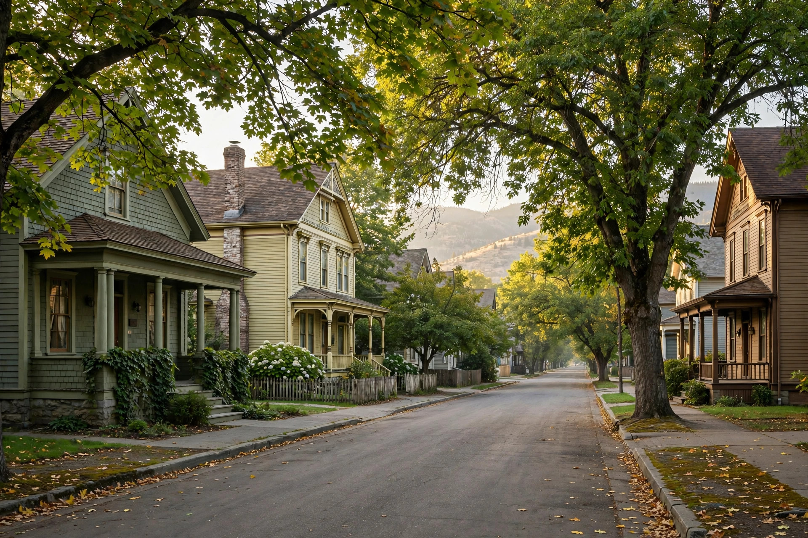
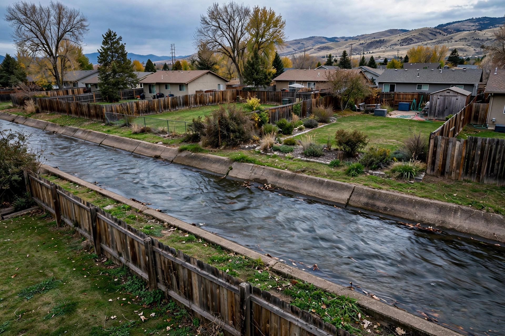
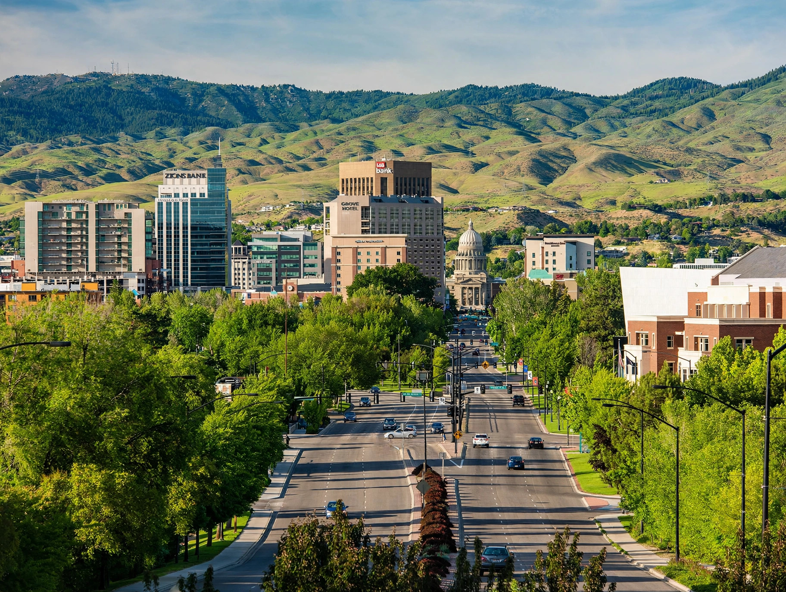

Mold Remediation in Boise, ID
From 100-year-old North End bungalows with stone foundations to 2000s builds in the southwest, Boise’s housing ranges widely — and so does the way mold shows up. Inspections start with how your home is built.
Every corner of Boise, with its own quirks
North End & East End
Historic districts near Hyde Park and Harrison Blvd. Rubble-stone and early concrete foundations, unvented crawlspaces and old cast-iron drains.
The Bench
Vista, Depot Bench and Morris Hill ranches — many with partial basements.
Southeast Boise
Near Boise State and the Greenbelt; split-levels and crawlspaces.
West Boise
Ustick to Cole; two-story tract homes, upstairs bath leaks.
Southwest Boise
Columbia Village and Lake Hazel area newer builds.
Foothills & Harris Ranch
Hillside lots with drainage toward foundations.
Downtown & Garden City edge
Condos, lofts and river-adjacent lots.
What drives mold in Boise homes
Canal season under the Bench
The New York Canal, Ridenbaugh Canal and their laterals run through the city. When they’re full, some properties nearby see damp crawlspaces that are bone-dry in winter.
Inversions and cold snaps
Week-long inversions keep homes closed up with high indoor humidity, and hard freezes split pipes in North End homes with uninsulated exterior walls.
Aging sewer laterals
Older clay laterals in established neighborhoods take on roots, which leads to slow drains and basement backups.
Permits for rebuild work after remediation go through Boise Planning & Development Services.

What Boise homeowners call about
Boise mold questions
Is mold common in older North End homes?
It’s one of the more common places to find it. Pre-war homes often have crawlspaces with dirt floors and no vapor barrier, and original windows that sweat in winter. Neither guarantees mold, but both make it worth a look during a purchase.
Does Boise’s dry climate mean I don’t need to worry about mold?
Low outdoor humidity helps, but almost all mold here comes from indoor water: leaks, condensation and seasonal groundwater. A dry climate can also hide a problem longer because surfaces dry on the outside while the cavity stays wet.
Will the City of Boise inspect my house for mold?
No — the city doesn’t do residential mold inspections. Tenants with habitability concerns can look to Idaho landlord-tenant law; homeowners generally hire a private inspector.
Do I need a permit to remove mold in Boise?
Removing and cleaning moldy materials doesn’t typically require a permit, but rebuilding — new drywall in some cases, electrical, plumbing or structural repair — may. Check with Planning & Development Services before rebuilding.
Free mold inspection anywhere in Boise
North End to Harris Ranch to Southwest Boise.
